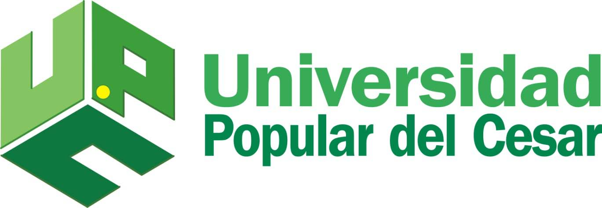

Cargando catálogo…
Acciones del recorrido
Usa estas acciones para cambiar de pantalla. Los formularios y botones dentro de las capturas son referencias visuales.
Estado de revisión:

UPC | AulaUniversidad Popular del CesarReferencia visual del proyecto
Explora la interfaz actual por rol. Este mockup reúne capturas de la aplicación y vistas con datos de prueba, organizadas como un recorrido documental.
Usa estas acciones para cambiar de pantalla. Los formularios y botones dentro de las capturas son referencias visuales.
Estado de revisión: